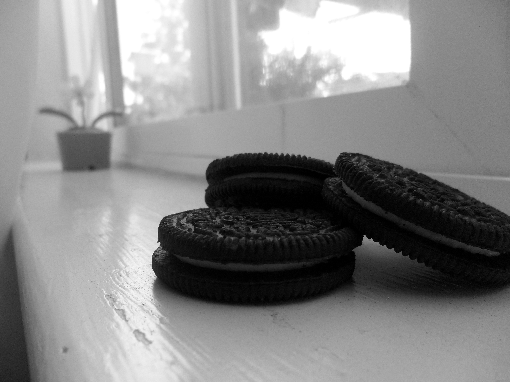
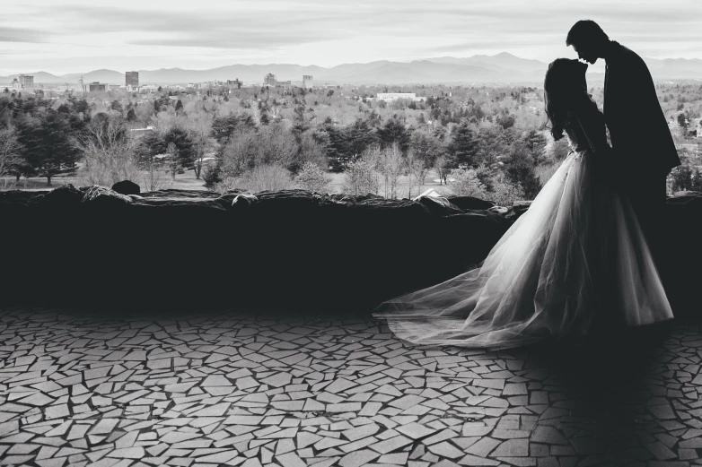
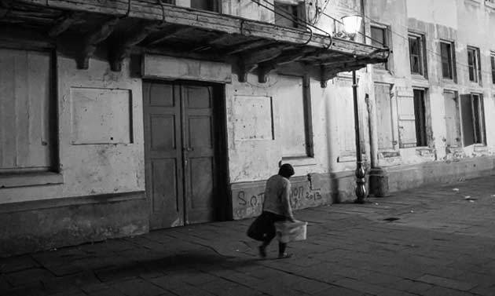

Apa itu Fotogrfi ?
fotografi itu sendiri merupakan serapan dari bahasa Inggris “photography” yang berarti “photos” cahaya dan “grafo” melukis atau menulis (asal kata Yunani kuno). Jadi, fotografi merupakan sebuah proses melukis dengan menggunakan media cahaya.
Genre dalam Fotografi
kita sering melihat beraneka foto di media sosial dan apakah lo tahu bahwa gambar yang kita lihat bisa di kategorikan kedalam beberapa genre, berikut ini gue akan saebutkan beberapa genre yang paling populer di dalam dunia fotografi

1. Fotografi Portrait
Genre portrait fotografi adalah jenis fotografi yang
berfokus motret manusia sebagai subjek yang difoto.
Sekilas genre ini terlihat remeh, tapi nyatanya sulit juga
loh, lo bakalan dapet banyak banget tantangan, dari
mulai direct model, pose model, ekspresi model, dll .

2. Fotografi Landscape
Landscape Fotografi adalah jenis foto yang berfokus
pada alam yang indah sebagai objek utama pada foto.
Untuk mendapatkan foto landscape yang bagus,
biasanya ada beberapa aspek yang mempengaruhi,
diantaranya adalah tempat alam yang indah, lensa
wide, tripod yang kokoh, hingga filter pada lensa.
Tapi, jangan khawatir buat lo yang masih pemula dan
tertarik untuk terjun di landscape ini, bisa pake alat
seadanya dulu, minimal sedia tripod.

3. Fotografi Makanan.
Untuk penjelasan sendiri pasti dah ngerti lah yaa.. food
fotografi itu yaaa motret tentang makanan, kalo lo
minat di genre ini, bakalan enak banget, lo bisa tawarin
ke umkm yang baru merintis untuk portofolionya, dan
lo bakalan di kasih makanan gratis, lumayan loh!

4. Fotografi Wedding.
Genre ini, memotret untuk mengabadikan moment
pernikahan 2 pasang kekasih yang sangat berharga dan
ga bisa di ulang.
Meskipun penghasilan yang diberikan besar, tanggung
jawab seorang fotografer wedding juga sangat besar,
karena momen yang di abadikan ga akan bisa keulang,
jadi harus dipastikan siap sebelum memotret, dari
settingan kamera, memory, batrei, flash, dan lain
sebagainya.
